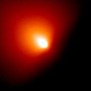

Komety a meteory
Web s informacemi o kometách a meteorech…

Kometa Linear 6. června 2000
Na webu se dozvíte základní informace a zajímavosti o kometách, meteorech a historii jejich výzkumu. Nehledejte zde aktuality, texty se zaměřují spíše obecněji.
Web jsem kompletně rekonstruoval v rámci mé seminární práce z fyziky na Gymnáziu v Kladně.
Jan Marek
Obsah webu
- Komety obecně
- Struktura komet, dráhy a rodiny komet, původ a zánik, známé komety
- Známé komety
- Podrobnější popisy význačných komet
- Halley
- Kometa 1P/Halley
- Hale-Bopp
- Kometa Hale-Bopp (C/1995 O1)
- Hyakutake
- Kometa Hyakutake (C/1996 B2)
- Shoemaker-Levy 9
- Kometa Shoemaker-Levy 9 (D/1993 F2)
- West
- Kometa West (C/1975 V1)
- Ikeya-Seki
- Kometa Ikeya-Seki (C/1965 S1)
- Encke
- Kometa 2P/Encke
- Meteory
- Meteory, meteorické roje a deště, meteority
- Meteory
- Vznik, rozdělení a pozorování meteorů
- Meteorické roje
- Meteorické roje a deště
- Meteorická tělesa
- Původ, zánik, hmotnost a důkaz meteoroidního komplexu
- Meteority
- Původ, složení, názvy, pády, meteority Příbram a Morávka
- Zvířetníkové světlo
- Světelný jev způsobený meteoroidním komplexem
- Historie
- Vývoj poznání komet a meteorů od nejstarších civilizací
- Antické Řecko
- Názory myslitelů
- Starověká Čína
- Zkoumání komet a názory na ně ve starověké Číně
- Evropa
- Středověká Evropa
- Edmond Halley
- Stručný životopis Edmonda Halleye
- Počátky vědy
- Počátky seriózního moderního vědeckého bádání
- Výzkum Meteorů
- Historie meteorické astronomie
- Výzkum
- Objevy, značení komet, sondy ke kometám
- Objevy a značení
- Vizuální a fotografické objevy, značení a pojmenování komet
- Halley 1986
- Výzkum komety Halley sondami při svém 30. návratu
- Další sondy
- Deep Space 1, Deep Impact, Stardust, Rosetta
- Odkazy, literatura
- Odkazy a použitá literatura